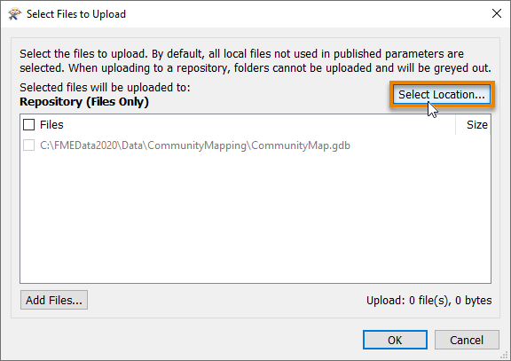
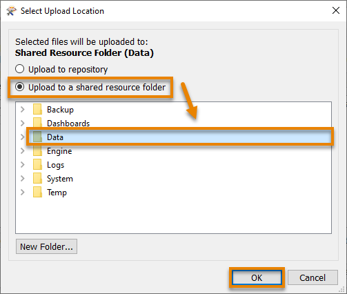
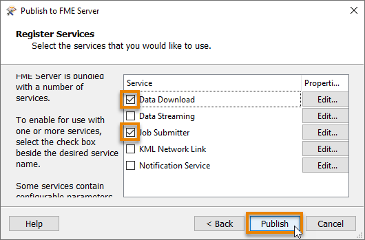
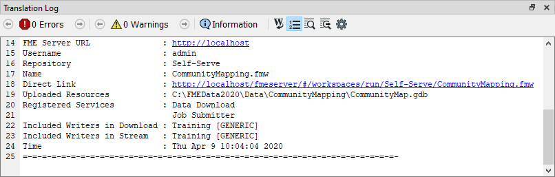

Learning Objectives
After completing this unit, you’ll be able to:
- Connect FME Desktop to FME Server using a web connection.
- Publish a workspace to the web.
- View your published workspace in FME Server.
Resources
Publish a Workspace to the Web
Now that Frank has created a self-serve workspace, he needs to publish it to FME Server.
Preparing a Workspace to Publish to FME Server
Frank already has a workspace that is working well. However, Jennifer notices a problem that he needs to address before publishing to FME Server. She explains that creating the correct user parameters before publishing makes a much better experience for users running the workspace using FME Server.
The path for the output data in the workspace is currently hardcoded to “C:\FMEData2020\Output\Training\Training.xlsx”. Frank confirms this in the Navigator > Training [Generic] writer > Destination Generic (Any Format) Folder parameter. Having this hardcoded is fine when he just runs it on his own machine. When he publishes a workspace to FME Server, the workspace will try to write data to the C:\ drive of the machine that is hosting FME Server. However, he can’t assume access to a C:\ drive: it could be restricted for security purposes, or if it’s a Linux machine it won’t even exist! Jennifer informs him it’s best practice to instead read and write data that exists in FME Server’s shared Resources folder.
To fix this, Frank double-clicks on the Destination Generic (Any Format) Folder parameter and enters “$(FME_SHAREDRESOURCE_DATA)\CommunityMapping.zip”. This path includes the “FME_SHAREDRESOURCE_DATA” user parameter (viewable under User Parameters > FME Server Parameters) and sets the workspace to write out its results to a ZIP file called CommunityMapping. When the workspace is published to FME Server, the data will be written out to the shared Data folder for all users to access. We’ll take advantage of that feature in a later unit.

Connect to FME Server with a Web Connection
Now that Frank’s prepared the workspace by creating the correct user parameters, he needs to create an FME Server web connection before he can publish. Jennifer walks him through the steps.
Note
Remember that database and web connections save authentication information to connect to databases, web services, and APIs. They are stored on the user’s operating system profile, so authentication information can be stored separately from the workspace. They can also be published to FME Server to allow multiple users to share them without exposing any passwords. The FME Server web connection works the same way as other web connections.
To create an FME Server web connection, Frank clicks the Publish to FME Server button in the Workbench toolbar.

Because this is his first time connecting to FME Server, the Connection drop-down is red. He clicks the drop-down and chooses Add Web Connection…

The FME Server Connection dialog opens and he fills it out to connect to FME Server running on his own machine:

After filling out the dialog, Frank clicks Authenticate. FME Workbench tests the connection and then returns him to the Publish to FME Server dialog. He clicks Next.
Publish a Workspace to FME Server
Now that he’s set up a web connection, Frank can finish publishing his workspace. He renames it CommunityMapping.fmw by typing in the Workspace Name field.
Workspaces in FME Server are stored in repositories. To create a new repository for his workspace, Frank clicks New… and makes a new repository called “Self-Serve”. He clicks OK twice to finish creating his new repository.

Jennifer reminds Frank to consider how his workspace will access data after he publishes it to FME Server. Many workspaces use data stored locally on the author’s computer, such as C:\FMEData2020\Data. However, FME Server is usually run on a different machine that doesn’t have access to that directory. Therefore, data used in workspaces published to FME Server should also be added to FME Server.
To accomplish this, Frank clicks the Select Files… button.

This action opens the Select Files to Upload dialog, which Frank sees he can use to add the geodatabase to the shared Data folder in FME Server. Frank does this by clicking the Select Location… button, then choosing the Upload to a shared resource folder option. Finally, he clicks the Data folder to select it and then presses OK.


He’s indicated where he wants to upload the data but now has to confirm which datasets to upload. He does this by checking the geodatabase.

With a destination for the geodatabase on FME Server selected, he clicks OK and then Next.
Before he can publish, Frank has to select service(s) for his workspace to use.
Frank has to choose services to control how users receive the data when they run the workspace on FME Server. These services each provide a different way to interact with the workspace:
Frank makes sure both the Data Download and Job Submitter services are checked. With these checked, anyone can run the workspace and receive a ZIP file of the results. Then he clicks Publish.

Frank’s workspace and data are now available in FME Server.
View a Published Workspace
Frank can access his workspace in a web browser using the Direct Link provided in the Translation Log: http://localhost/fmeserver/#/workspaces/run/Self-Serve/CommunityMapping.fmw.

He clicks the link to open FME Server. This link directs Frank to the Run Workspace page. Here he can choose which workspace to run, which service to use, optionally provide an email to send the results to, and set the published parameters. Here he sees why published parameters are important - creating them in FME Workbench allows him to customize the experience for users running his workspace on the web.

Exercise
Make sure you have followed along with Frank’s steps.